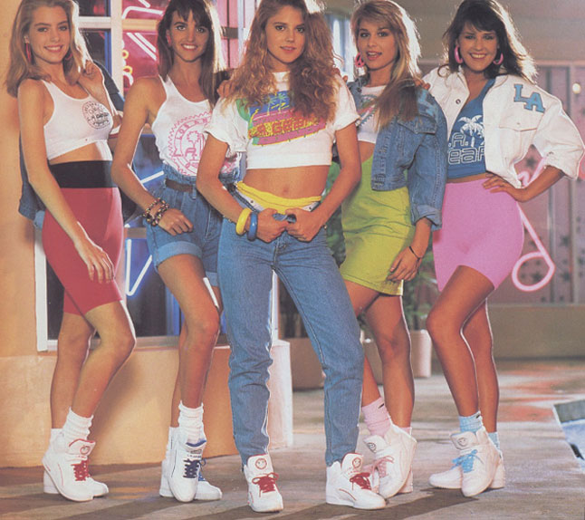

In the Shadow of the '80s:
Yesterday's High Rollers Struggle in a New Era of Sobriety
Like other scoundrels caught red-handed, convicted con man Barry Minkow says
he has renounced crime and found Jesus - and he's banking on his dramatic
conversion from Judaism to make a comeback. Sentenced to 25 years in prison
in connection with one of the largest Wall Street scams ever, the founder
of the ZZZZ Best carpet-cleaning company in the San Fernando Valley may be
paroled from federal prison as early as next July, after serving about
a third of his term.

The Teen Hot Spots of Yesterday
Cars, clothes and conversation change over the decades, but one fact remains the same:
Teen-agers have always found the time to hang out together outside of school. Here's a
brief list of popular local hangouts, and - if they're still standing - what they have
become. Happy Days in the 1950s Hi-Way 39 Drive-In Theater: A place to show off
your car or your date, it's still operating in Westminster.
AFTER THE RIOTS: REBUILDING THE COMMUNITY: South L.A.'s Poverty Rate Worse Than '65
South Los Angeles - the epicenter of the deadly rioting - lagged far behind the rest
of the county during the 1980s in nearly every measure of prosperity, and has
a higher poverty rate now for its families than it had in 1965, according to
new Census Bureau figures. The statistics underscore numerically the social problems
that have plagued the area since the Watts riots more than a quarter century ago:
joblessness, hopelessness and a crippling lack of skills and education.